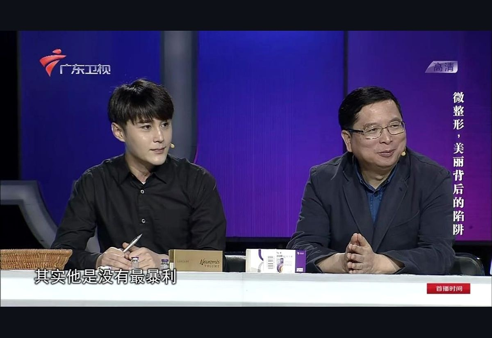
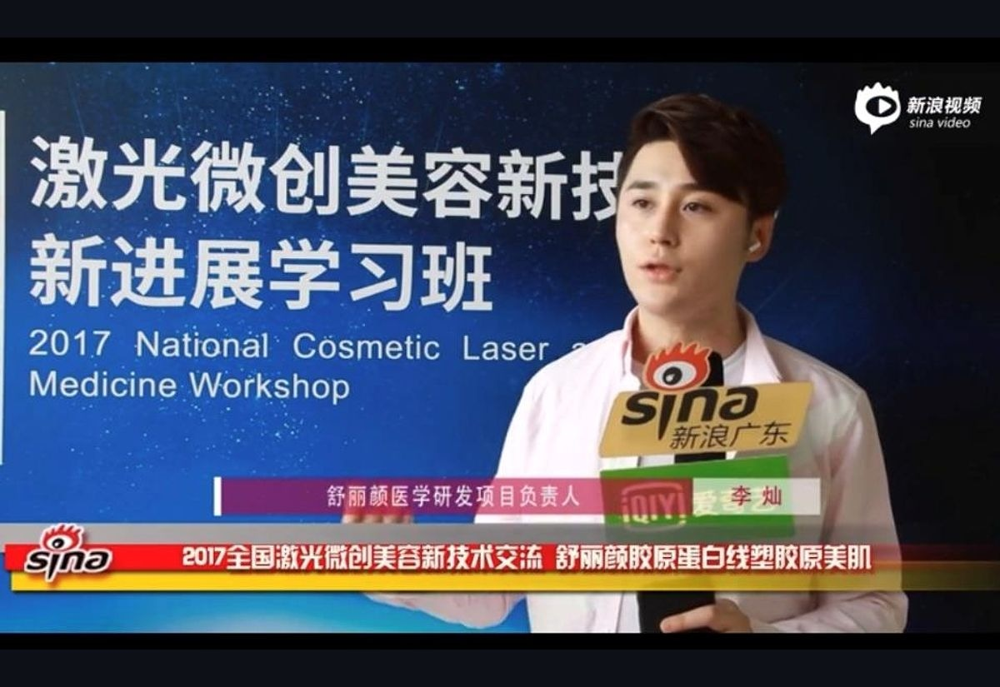
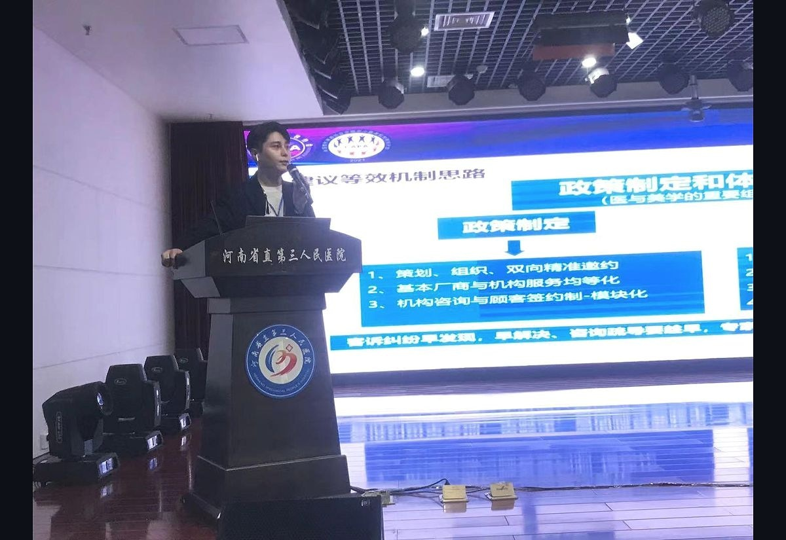
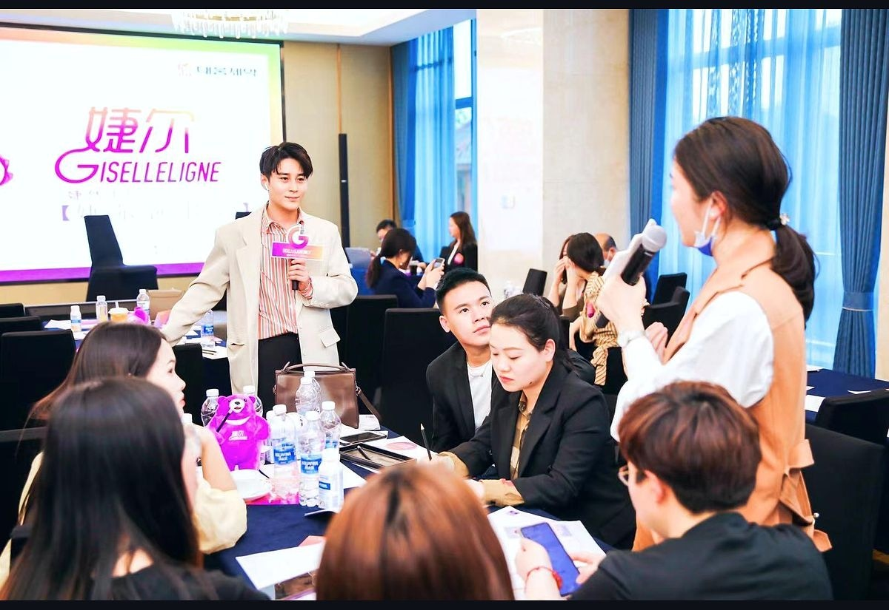
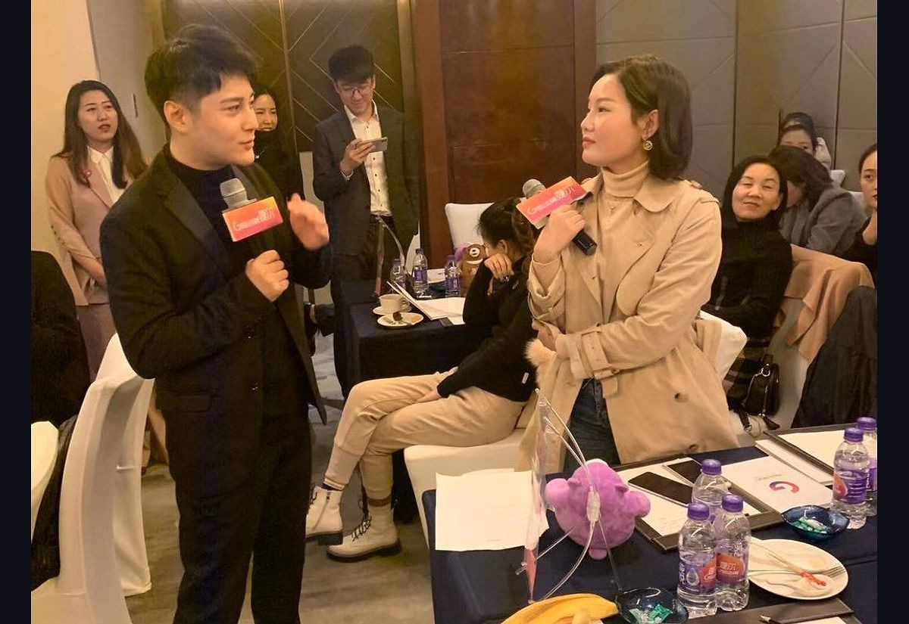
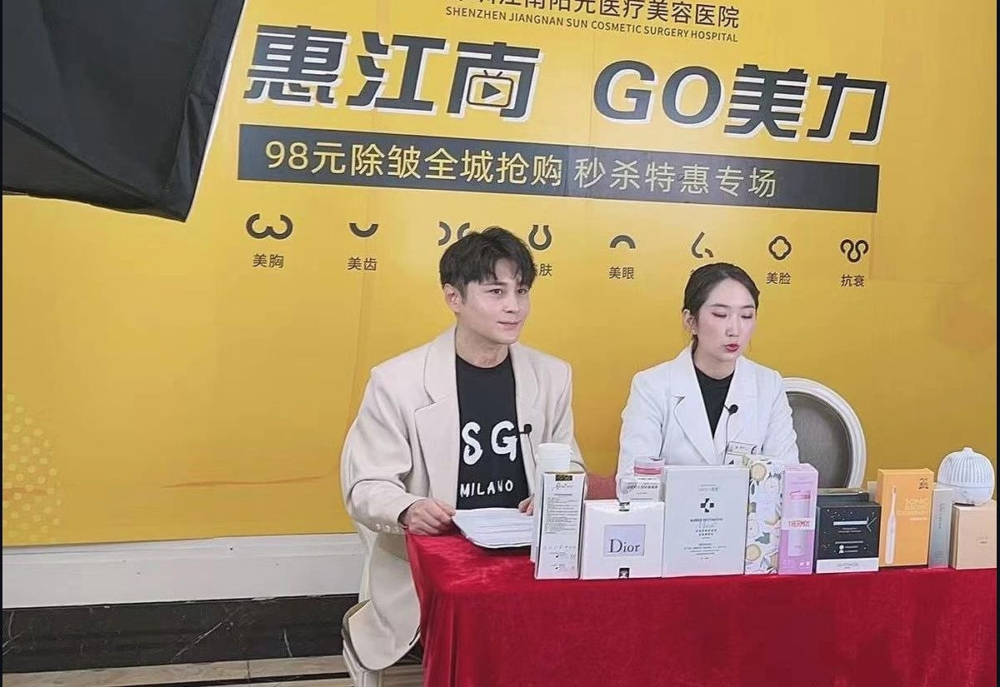
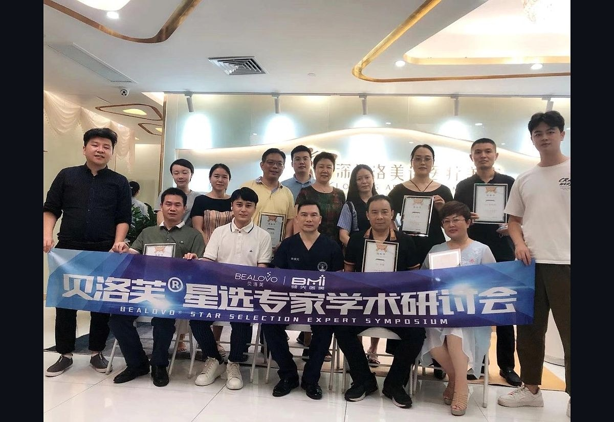
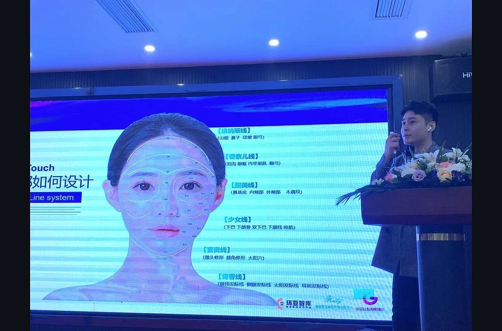
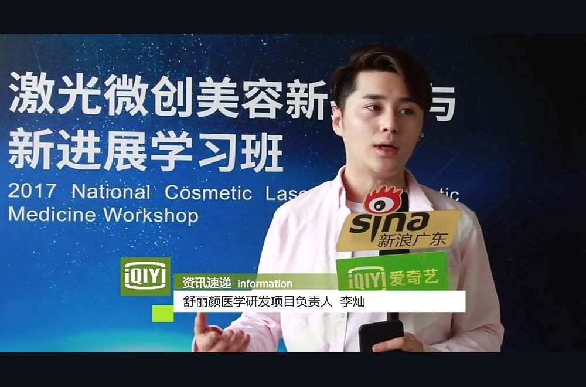
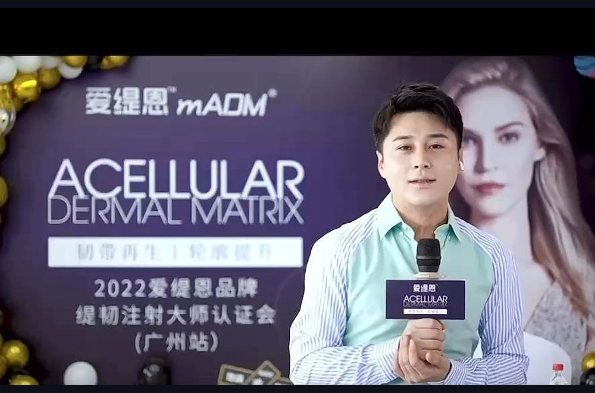

审美判断
从面部比例、气质表达和生活场景出发，先明确“为什么做”和“做到哪里”。
Profile
从面部比例、气质表达和生活场景出发，先明确“为什么做”和“做到哪里”。
在方案前置阶段拆解限制、恢复期、预期差和不可逆风险，避免冲动选择。
结合机构、医生、产品与培训经验，建立更清晰的筛选与匹配路径。
Evidence

媒体访谈

行业采访

主题演讲

线下培训

现场问答

品牌活动

行业交流
Method
医美不是单一项目选择，而是审美目标、身体条件、医生能力、产品边界和恢复节奏的组合判断。
李灿的工作重点，是在执行前把信息讲清楚，把可选路径排出来，把不适合的方案先排除。
把模糊的“想变好看”转化为具体、可讨论的审美目标。
让预期、限制和可能代价在决策前被充分看见。
用更清晰的标准匹配机构、医生、产品和服务节点。
Notes

需求澄清

风险理解

资源筛选
Contact
适合希望在行动前厘清需求、比较资源、理解风险，并建立长期审美规划的人。
回到顶部